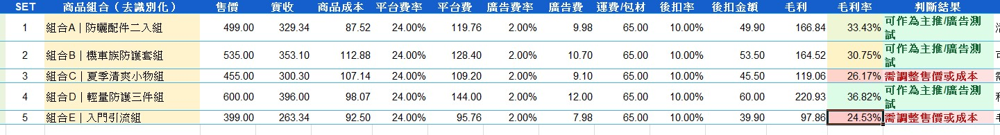
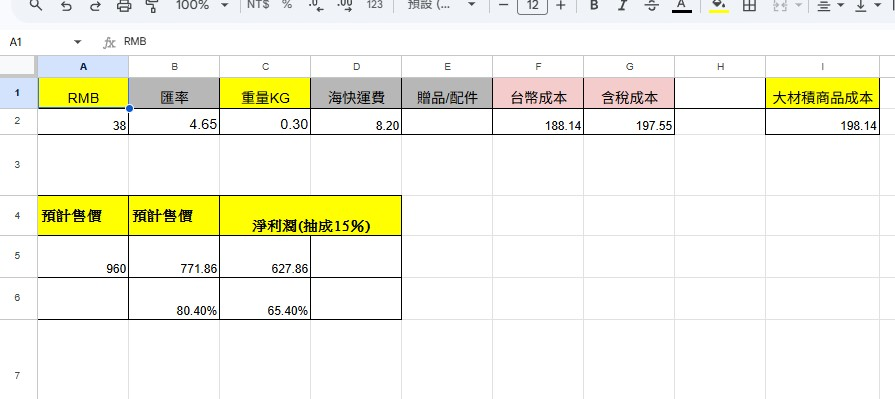
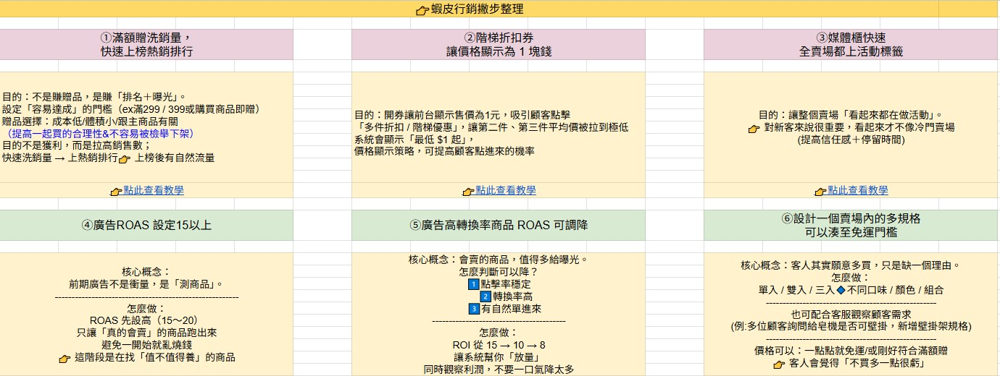
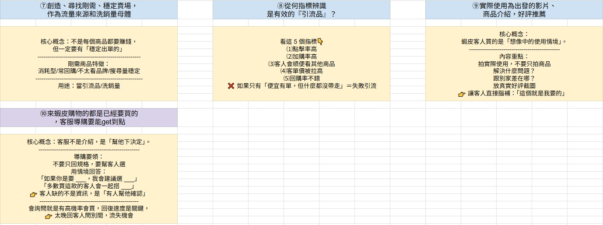

電商行銷知識整理
這一區整理我在電商美編工作之外，自主補強的商品成本、平台活動與廣告邏輯。 內容包含商品組合毛利試算、進貨成本與售價估算，以及蝦皮活動操作筆記。 目標是讓自己的設計判斷不只停留在畫面美感，也能理解商品是否適合主推、是否具備利潤空間，以及平台活動如何影響轉換。
整理重點
這一頁不是實際廣告投放成果，而是我對電商營運邏輯的學習整理。 透過成本表、毛利率、平台費、廣告費與活動機制，練習用更接近營運與行銷的角度思考商品視覺。
商品組合成本與毛利試算
整理商品組合售價、平台費、廣告費、運費、後扣與商品成本，練習判斷不同組合是否具備足夠毛利空間，並依毛利率判斷是否適合作為活動主推或廣告測試商品。

組合商品毛利判斷
透過售價、實收、商品成本、平台費、廣告費、運費與後扣，計算不同組合的毛利與毛利率，判斷商品是否適合主推、廣告測試或需要調整售價與成本。
商品成本與預估售價試算
依照商品 RMB 成本、匯率、重量、運費、配件與含稅成本，練習估算商品售價與淨利潤，協助判斷商品是否具備基本利潤空間。

單品成本與售價估算
透過匯率、重量、運費與平台抽成概念，練習從商品成本推估售價與利潤空間，避免只用視覺角度判斷商品價值。
蝦皮活動與廣告邏輯整理
自主整理蝦皮賣場常見活動與廣告操作邏輯，包含滿額贈、階梯折扣券、媒體櫃標籤、ROAS 設定、商品規格設計與客服導購話術。

平台活動邏輯整理
整理滿額贈、階梯折扣券、媒體櫃標籤與 ROAS 設定，理解活動如何影響商品曝光、點擊與轉換。

流量品與導購筆記
整理流量品判斷、商品影片內容重點與客服導購話術，理解消費者從看見商品到下單之間的決策過程。